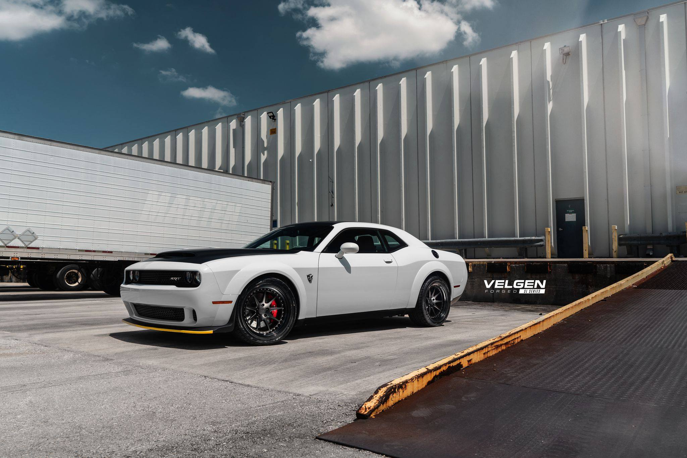
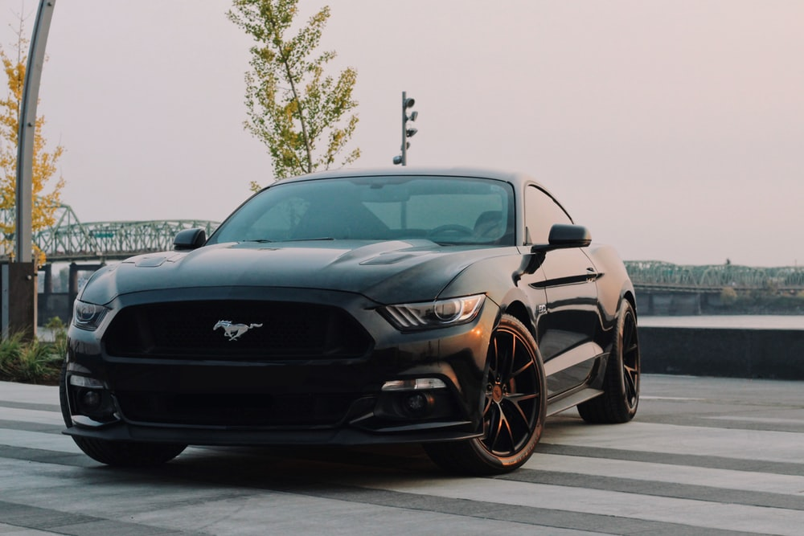
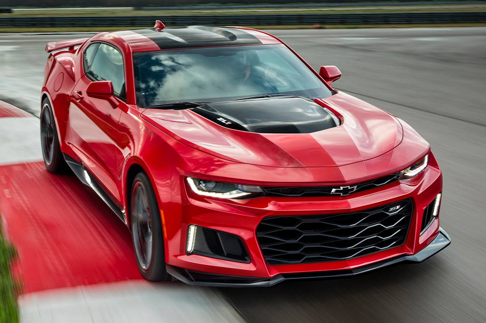

If you love speed, then the 1960s and 1970s was a great time to be alive.
This era of power created some of the rarest muscle cars packing
giant torque-rich V-8s. and other regulations would tame muscle cars in the 1980s,
but these aging beasts of the road still come with some
surprising stories as well as some surprising horsepower.

The Dodge Challenger made its debut in the fall of 1969 as a 1970 model.Ford and Chevrolet
(the other competitive muscle car producers) have taken the sporty look route instead of muscle.
But, dodge decided to keep the car true to its roots. Staying true to the roots make it the most
competitive muscle car.

The Ford Mustang is an American car manufactured by Ford. Introduced early on April 17, 1964
(16 days after the Plymouth Barracuda), and thus dubbed as a "1964½" by Mustang fans, the 1965 Mustang
was the automaker's most successful launch since the Model A.

On September 29, 1966, the Camaro legend was born as a direct response to the popular Ford Mustang.
The Camaro and its sister — the Pontiac Firebird — were engineered to provide the average driver
with a sports car experience.